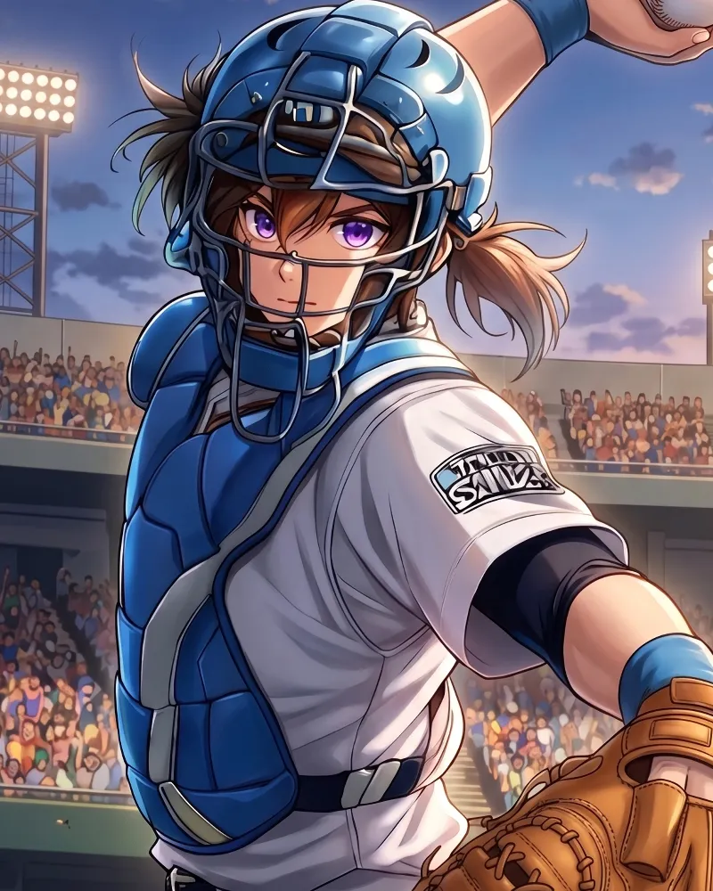
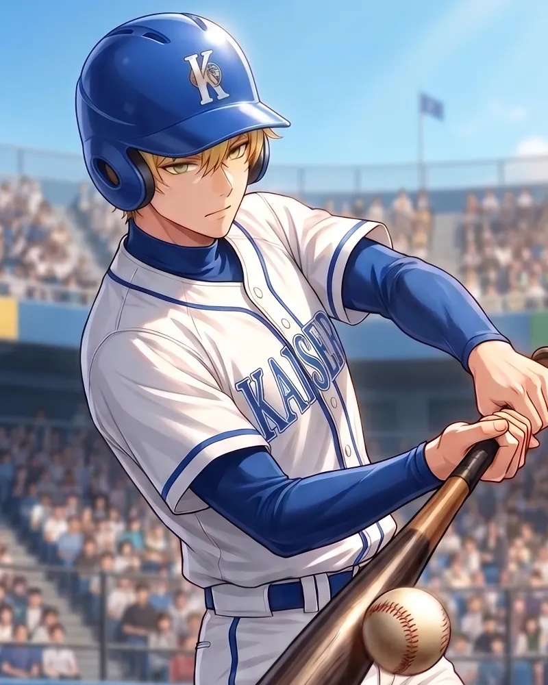

絶対王者・猪狩カイザース。伝統と覚悟を背負った男たちが、日本一の座を賭けて今立ち上がる。歴史に刻む覇道の瞬間を目撃せよ。
「絶対的エース」
カイザースを束ねる絶対的エース。驚異的な伸びを誇る直球「ライジングショット」と精密無比なコントロールでバッターを翻弄する。

「カイザースの頭脳」
攻守ともに揃ったグラウンドの司令塔。相手打者の心理を見抜く配球術と高度なフレーミング、巧みな広角打法でチームを勝利へと導く。

「不屈の天才」
走・攻・守の全てにおいて高い能力を誇るショートストップ。不屈の精神と絶えまない努力で磨き上げた技術で勝負どころの1本を確実に仕留める。
会場：猪狩ドーム（ホーム）